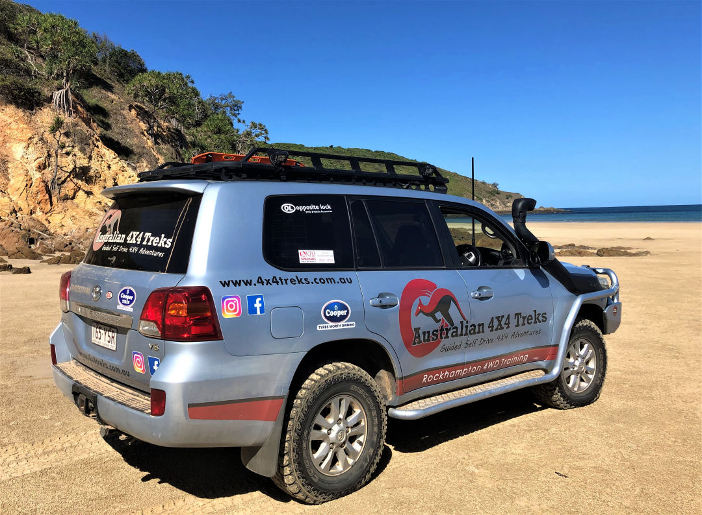
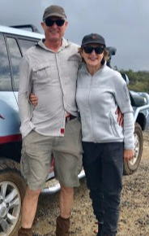
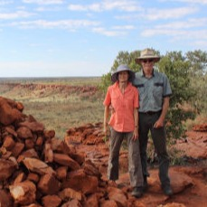

JUNE 2021
• Simpson Desert - SOLD OUT
Australian 4X4 Treks 2021
Australian & Overseas 4X4 Treks 2022

We provide a safe and hassle-free way for people to travel to remote locations. Our carefully planned tours are designed to let you safely experience incredible 4X4 locations with like-minded and enthusiastic companions in places most people would never go by themselves.
Very simply put, you follow the tour leader in your own or a hired 4X4 vehicle. And you don't need to have any off-road driving experience because our professional tour guides are also four wheel driving instructors, providing instruction and support throughout each tour to help customers successfully and safely tackle challenging terrain in isolated situations. You will come away from a tour with us with a real sense of achievement and 4X4 skills to last you a lifetime.
We use a network of travel experts around the World to provide a seamless experience for our customers. Up to 8 customer vehicles come on our tag-along tours which are a mix of self, part and fully catered and accommodated or camping, depending on the location.
Our guides are experienced 4X4 tour leaders from Australia, New Zealand and Scotland. On our far-flung International treks, we also take a local mechanic who acts as our interpreter to help us along the way.
There's nothing like local knowledge to get the most out of a trip. We take away the hassle of trying to figure out exactly where to go, how long it takes to get there, what the facilities are like and how to best use your time to see all of the highlights.
Pack your sense of adventure!
What our previous customers say...
Click here for video testimonials
"I have completed a number of guided 4WD trips with Tony Davys both with his previous employer and more recently with his new business based in Rockhampton QLD. These have included a 7 day Victorian High Country Tag-along Tour, a 4 week Canning Stock Route Tag-along tour and a 7 day Queensland Coastal Private Fishing, Camping and 4WDriving Tour.
Each trip was meticulously planned, organised and led by Tony. His knowledge of the area and the terrain, his choice of routes and camping spots and his support and enthusiasm were second to none. He even organised a party and baked me a cake to celebrate my 60th birthday in the middle of the Canning Stock Route."

"Thought that I’d let you know how much we enjoyed our tripping around the countryside with you. Arnhem Land gave us a real insight into indigenous culture, and the ability to engage with the population was made more special because of the relationship you had with the locals. When the chance came up to do the Canning Stock Route with you we jumped at it because of the great experience you showed us in Arnhem Land. You did not disappoint. Your knowledge of the local history, flora and fauna, made this a truly memorable month.
In both of these trips you showed calm but firm leadership, an understanding of how to give advice which led to participants maximising their enjoyment and abilities – both personal and with their vehicle. Mechanical issues were dealt with promptly, so that small things did not become major."

208 Quay Street
Rockhampton
Queensland 4700
Australia
info@4x4treks.com.au
Phone/WhatsApp:
+61 475 467 402
Page was designed with Mobirise